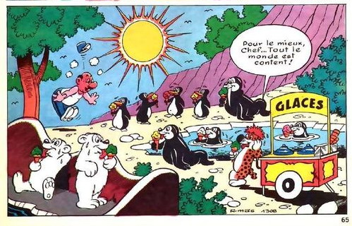
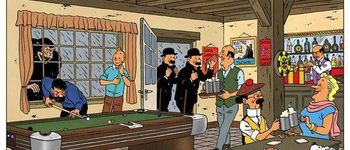

Hello Dali Zigomar !


limoncello
limoncelloo
lecteur Radio Zigomar
lecteur Radio Zigomar (brut)
lecteur Radio Zigomar (cs)
importer Images
شاهد الجزيرة
pour traduction
pour traduction
NOTE ET BLAGUE DU JOUR
Radio ZIGOMAR 98.3 FM
15:42
The Offspring - Self Esteem
15:35
Soul Asylum - Runaway Train
15:31
Van Halen - Can't Stop Lovin' You
15:27
Vanilla Ice - Ice Ice Baby
15:19
Soul II Soul - Back to Life
15:14
Bobby Brown - Two Can Play That Game
15:11
David Guetta & Madonna - Justify My Love